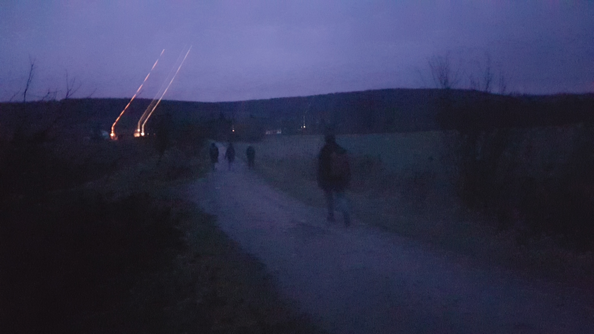
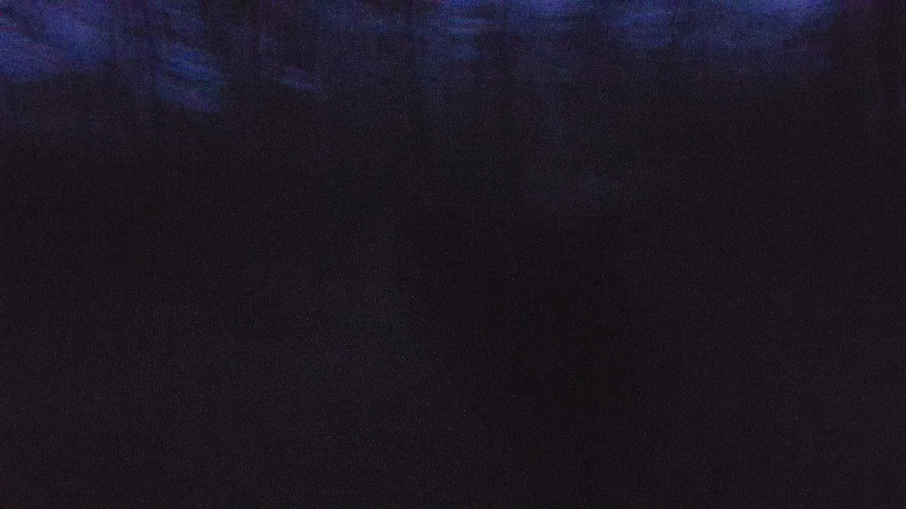
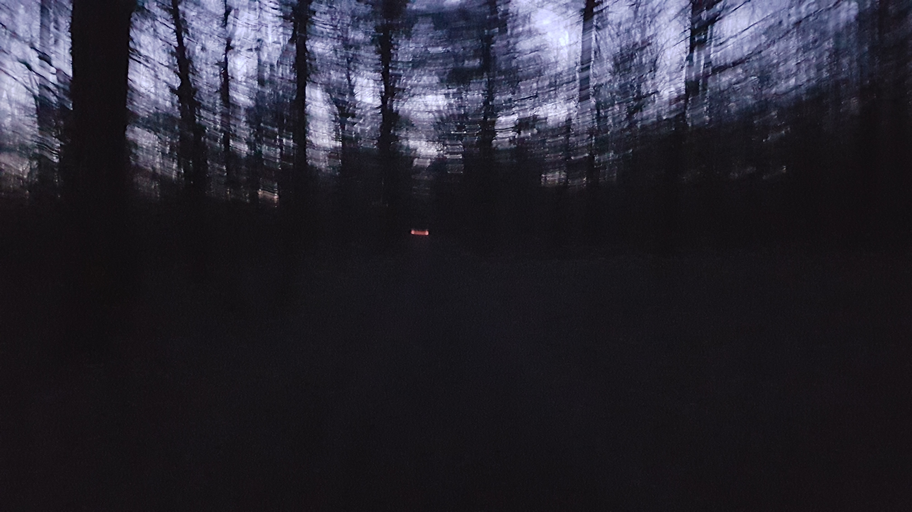
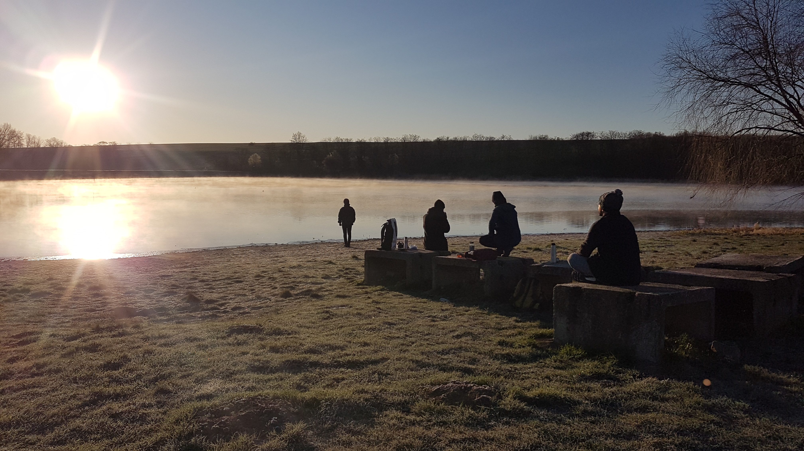

Dem Sonnenaufgang Entgegen
I experienced for the first time a night walk when I joined the Italian collective Mala for their night ritual organised for the Walking Encounters Congress in Prespes, Greece. The ritual of collectively embracing the perceptual impulses that the night time has to offer was an eye-opening experience. Therefore I decided to continue the practice with this series of walks that welcome the sunrise at four crucial days of the year, during the winter & summer Solstice and during the spring and autumn Equinox. I guide the group through a landscape that is gradually changing due to the approaching sun.
Walkers on Winter Solstice walk: Anne, Beate, Paloma & René
Walkers on Spring Equinox walk: Beate, Joaquin, Lina, Milad, Sophie


Spring Equinox
  